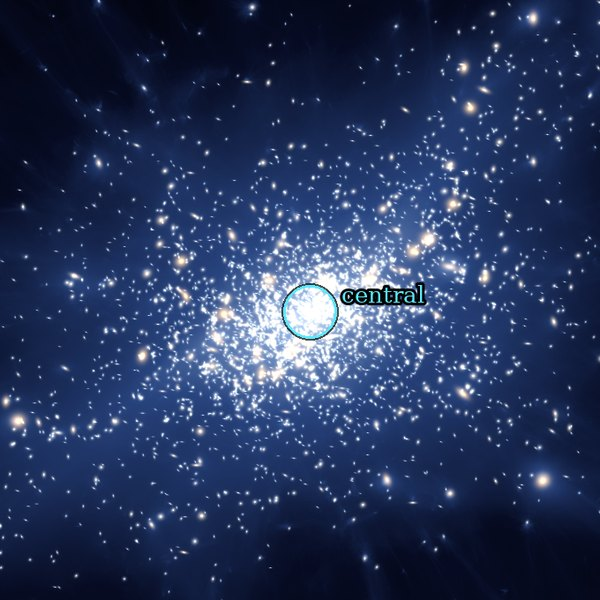
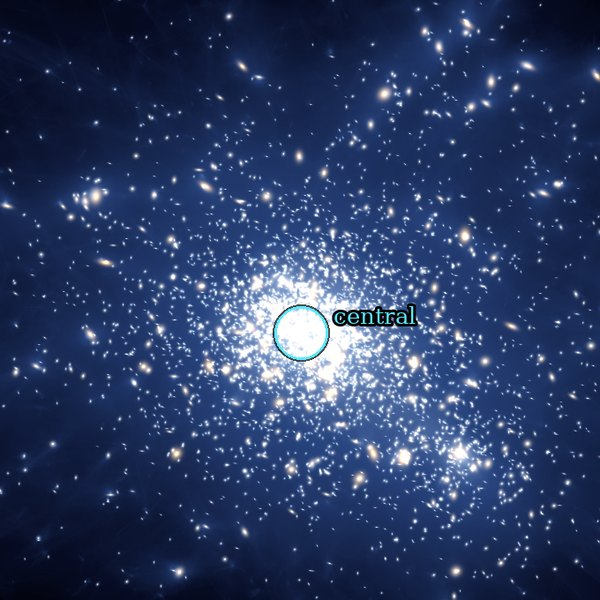
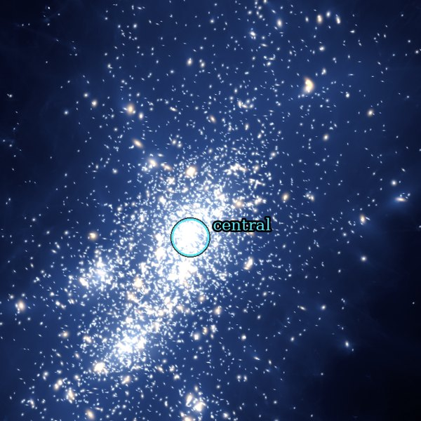
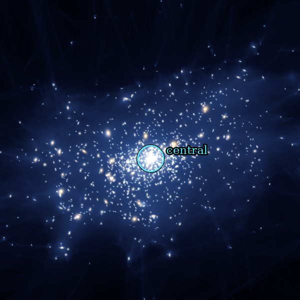
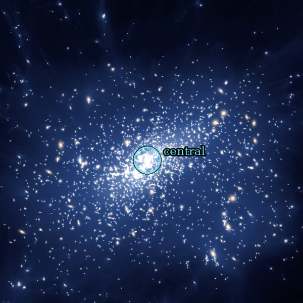
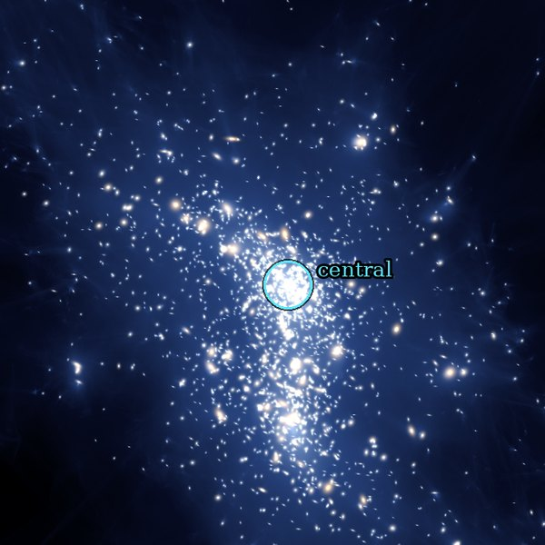

Halo 4455065#001
Mvir(z = 1.91) 9.40 × 1013 M☉/h
grows ×366 to z = 0.22 · 1,075 MAPs + infaller
grows ×366 to z = 0.22 · 1,075 MAPs + infaller

Halo 379500#002
Mvir(z = 1.91) 9.29 × 1013 M☉/h
grows ×135 to z = 0.22 · 1,170 MAPs
grows ×135 to z = 0.22 · 1,170 MAPs

Halo 2372071#003
Mvir(z = 1.91) 7.51 × 1013 M☉/h
grows ×724 to z = 0.22 · 1,067 MAPs
grows ×724 to z = 0.22 · 1,067 MAPs

Halo 589441#010
Mvir(z = 1.91) 4.51 × 1013 M☉/h
grows ×100 to z = 0.22 · 546 MAPs
grows ×100 to z = 0.22 · 546 MAPs

Halo 145225#025
Mvir(z = 1.91) 3.54 × 1013 M☉/h
grows ×107 to z = 0.22 · 565 MAPs
grows ×107 to z = 0.22 · 565 MAPs

Halo 420278#050
Mvir(z = 1.91) 2.83 × 1013 M☉/h
grows ×668 to z = 0.22 · 389 MAPs
grows ×668 to z = 0.22 · 389 MAPs